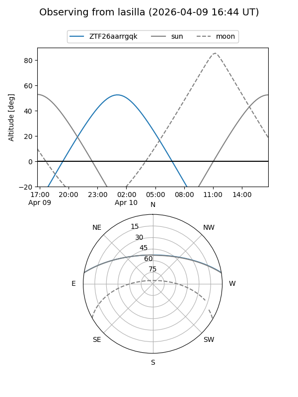
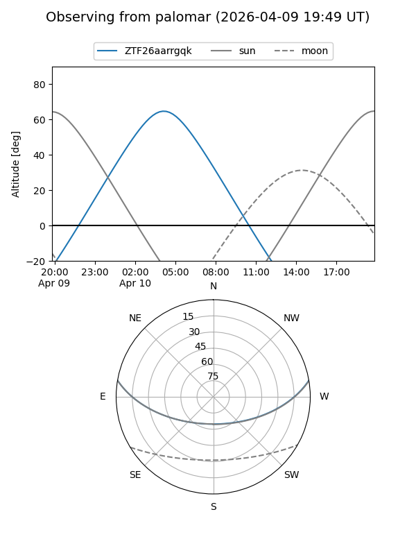

ZTF26aarrgqk
Target ZTF26aarrgqk at 2026-04-10 06:11
Aliases and brokers:
FINK: link
Lasair: link
ALeRCE: link
alt names
ZTF26aarrgqk (ztf,fink_ztf)
Coordinates:
equatorial (ra, dec) = 143.2778,+8.23591
equatorial (HMS+DMS) = 09:33:06.67,+08:14:09.28
galactic (l, b) = (225.2914,+39.52419)
Flags:
Photometry:
last ztfg=19.83
2 ztfg detections
Lightcurve
Visibility


Additional plots